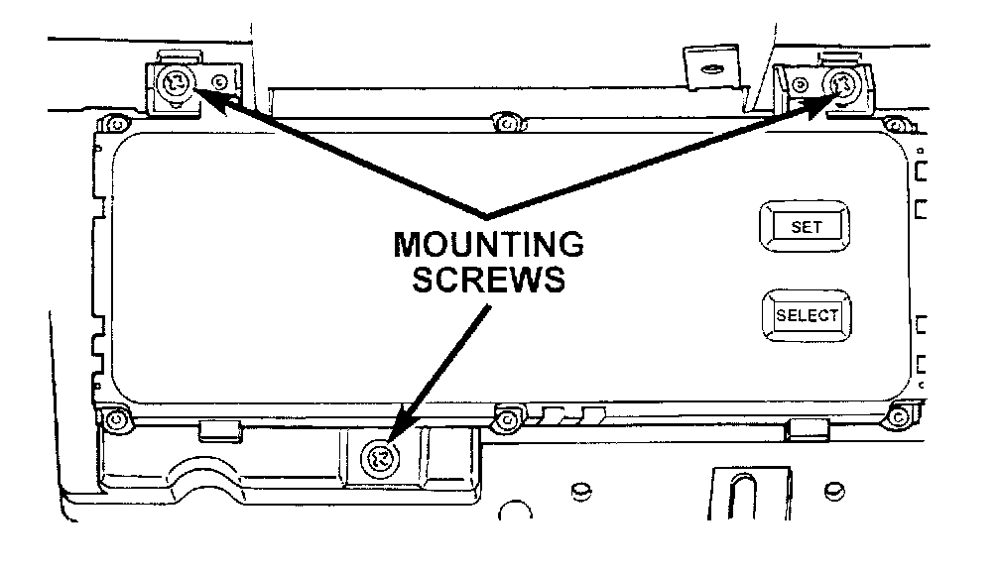

Graphic Display Module/Vehicle Information Center
REMOVALWARNING: ON VEHICLES EQUIPPED WITH AIR-BAGS, REFER TO AIRBAGS SYSTEMS BEFORE ATTEMPTING ANY STEERING WHEEL, STEERING COLUMN, OR INSTRUMENT PANEL COMPONENT DIAGNOSIS OR SERVICE. FAILURE TO TAKE THE PROPER PRECAUTIONS COULD RESULT IN ACCIDENTAL AIR-BAG DEPLOYMENT AND POSSIBLE PERSONAL INJURY.
1. Remove the glove box module from the instrument panel. See Glove Box Module procedures.
Graphic Display Module/Vehicle Information Center Remove/Install:

2. Remove the three screws that secure the Graphic Display Module (GDM) or Vehicle Information Center (VIC) to the instrument panel armature.
3. Pull the GDM or VIC unit out from the instrument panel far enough to access and unplug the wire harness connector.
4. Remove the GDM or VIC from the instrument panel.
5. Reverse the removal procedures to install. Tighten the mounting screws to 2.2 N.m (20 in. lbs.).